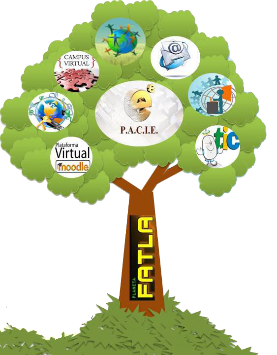
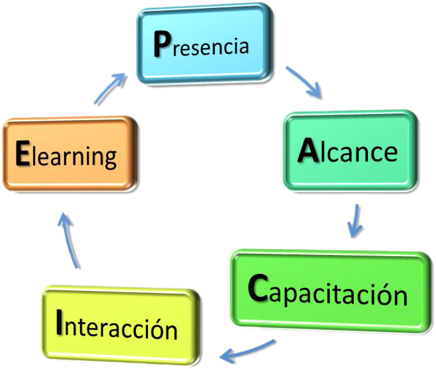
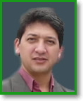
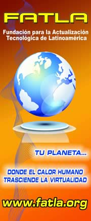

LA METODOLOGÍA PACIE:

APARICION DE PACIE:
La creación de plataformas Elearning, el incremento de varios idiomas en la red, la facilidad de procesos tecnológicos, etc. creó un falso imaginario de reproducir lo real en lo virtual sin metodología alguna.
PACIE es una metodología que permite el uso de las TIC's como un soporte a los procesos de aprendizaje y autoaprendizaje, dando realce al esquema pedagógico de la educación real.
PACIE toma como elementos esenciales a la motivación y al acompañamiento, a la riqueza de la diferencia, a la calidad y a la calidez versus la cantidad y la frialdad.
PACIE adiciona a la comunicación y exposición de la información, procesos sociales que apoyan la criticidad y análisis de los datos para construir conocimiento, mediante el compartir educativo.
Con PACIE ya no sólo se: informa, expone y enseña..., sino que: se crea, se educa, se guía y... se comparte...
SIGNIFICADO DE PACIE

EL MENTOR DE PACIE
Presentación.
Su nombre es Pedro Camacho, pero todos me le llaman como Peter, nació en Quito, pero ha crecido y vivido en diferentes lugares, está casado con una preciosa quiteña llamada Paola, tiene tres hijos...
Es un profesional muy hiperactivo, por lo que ha incursionado en muchas áreas, sin embargo le fascina todo lo relacionado a la informática y la educación. Sus hobbies son: curiosear en el Internet y todos los deportes sobre ruedas, en el especial el Country City y la Fórmula 1 (del caballito rampante: FERRARI).
Ha sido instructor, profesor y tutor en varias partes. Creador de la metodología PACIE y fundador de la Universidad Virtual de FATLA.
APLICACION DE PACIE

La Fundación para la Actualización Tecnológica de Latinoamérica, FATLA, usa esta metodología con todas sus instituciones y proyectos, y se enorgullecen del éxito obtenido en todas y cada una de sus aplicaciones a nivel latinoamericano.
La información sobre esta metodología es realmente voluminosa, por lo que existen seminarios, talleres y capacitaciones referentes a la misma, que se han dictado ya en varios países no sólo de Latinoamérica, sino de Europa, Canadá y Estados Unidos; actualmente incluso está siendo aplicada en un plan piloto en Asia con el International School of Tiajin.
La Fundación capacita a los directivos y coordinadores de proyectos educativos en la aplicación de la metodología en los procesos de transición hacia el uso correcto de las TIC’s en los procesos de aprendizaje actual.